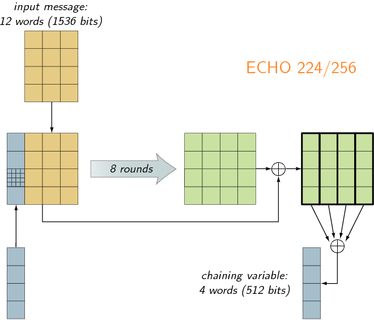

Der Hashalgorithmus ECHO nimmt eine Nachricht und einen Salt als Eingabe. Der Salt ist 128 Bit lang. Wird dieser nicht angegeben oder benötigt, dann ist der Defaultwert 0. Die Ausgabe kann jede Bitlänge zwischen 128 und 512 sein, wobei vom NIST nur 4 Bitlängen gefordert sind. Grundsätzlich baut ECHO auf den bekannten Verschlüsselungsalgorithmus AES auf. Je nachdem welche wie lang der Hashwert am Schluss sein soll, wird auf 2 unterschiedliche Kompressionsmethoden zurückgegriffen.
Es werden folgende Hash-Bitlängen unterstützt:ECHO Funktionsweise:
Zuerst werden die 12 Words mit den letzten 4 Chaining-Words verknüpft, danach folgen die an AES angelehnten Runden. Zum Schluss wird die Ausgabe per XOR mit der Eingabe verknüpft und die erste Spalte als Chainingvariable weiter verwendet. Bei einem Hashwert von 128 bis 256 ist die Chainingvariable 512 Bit lang. Als Hashwert werden die ersten Bits in der Länge des Hashwertes genommen.
